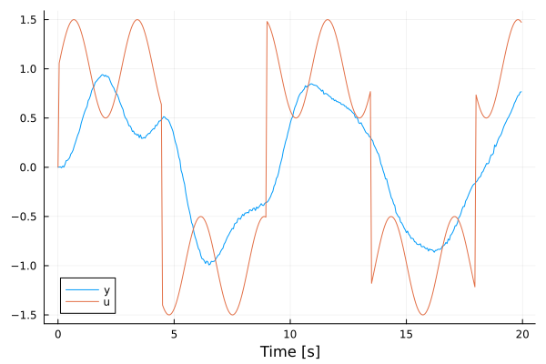
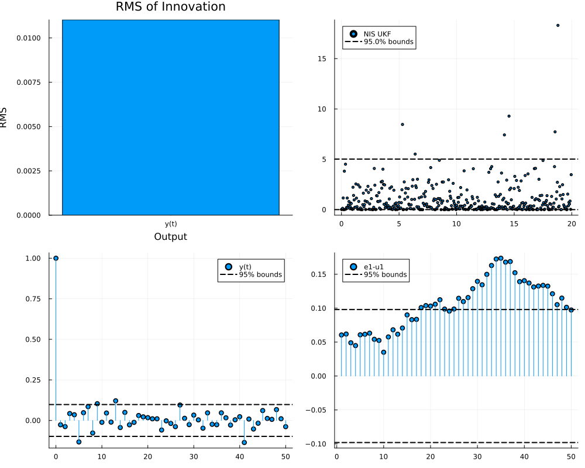
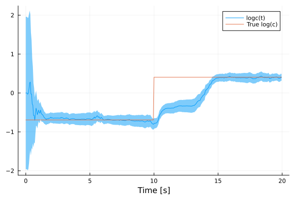

Parameter and covariance estimation
The model parameters and the noise covariances of a StateEstimationProblem can be estimated from data by maximizing the likelihood of the data under a Kalman-type filter, or by minimizing its prediction errors. LowLevelParticleFilters.jl provides the cost functions and optimization utilities for this purpose, see the parameter-estimation tutorial of LowLevelParticleFilters.jl. This page demonstrates their use together with a ModelingToolkit model. The following functions are used to construct filters for new parameter values without repeating the symbolic processing and code generation performed by the constructor of StateEstimationProblem:
parameter_setter(prob, syms)returns a functionsetpsuch thatsetp(θ)is a copy of the parameter objectprob.pin which the parameterssymsare replaced by the entries ofθ.remake(prob; p, df, dg, d0)returns a copy ofprobwith the parameter object, the noise distributions or the initial-state distribution replaced. The generated functions are reused.get_parameters(prob, syms)returns the current values of the parameterssyms, e.g., for use as an initial guess.
Model and data
We consider a mass-spring-damper system with damping coefficient $c$ and spring constant $k$. A disturbance force $w$ acts on the mass, and the position of the mass is measured.
using LowLevelParticleFiltersMTK
using LowLevelParticleFilters
using LowLevelParticleFilters: SimpleMvNormal
using ModelingToolkit
using SeeToDee
using StaticArrays
using LinearAlgebra
using Distributions
using LeastSquaresOptim
using ForwardDiff
using Plots
using Random
Random.seed!(0)
t = ModelingToolkit.t_nounits
D = ModelingToolkit.D_nounits
@component function MassSpringDamper(; name)
pars = @parameters begin
m = 1.0
c = 1.0
k = 1.0
end
vars = @variables begin
x(t) = 0.0
v(t) = 0.0
u(t) = 0.0
y(t)
w(t), [disturbance = true, input = true]
end
eqs = [
D(x) ~ v
m*D(v) ~ -k*x - c*v + u + w
y ~ x
]
return System(eqs, t, vars, pars; name)
end
@named model = MassSpringDamper()
cmodel = complete(model)
inputs = [cmodel.u]
outputs = [cmodel.y]
disturbance_inputs = [cmodel.w]
nw = length(disturbance_inputs)
ny = length(outputs)
Ts = 0.05
discretization = (f, Ts, x_inds, alg_inds, nu) -> SeeToDee.Rk4(f, Ts)The data is generated by a simulation of the problem with the true parameter values and noise covariances. The function simulate samples the disturbance inputs from df and the measurement noise from dg.
c_true, k_true = 0.5, 2.0
σw_true, σe_true = 0.1, 0.01 # Standard deviations of the disturbance force and the measurement noise
df_true = SimpleMvNormal(SMatrix{nw,nw}(σw_true^2*I))
dg_true = SimpleMvNormal(SMatrix{ny,ny}(σe_true^2*I))
prob_true = StateEstimationProblem(model, inputs, outputs; disturbance_inputs, discretization, Ts,
df = df_true, dg = dg_true, pmap = [cmodel.c => c_true, cmodel.k => k_true])
N = 400
timevec = range(0, step = Ts, length = N)
u = [[sign(sin(0.7ti)) + 0.5sin(2.3ti)] for ti in timevec]
x, u, y = simulate(get_filter(prob_true, UnscentedKalmanFilter), u)
plot(timevec, reduce(hcat, y)', lab = "y", xlabel = "Time [s]")
plot!(timevec, reduce(hcat, u)', lab = "u")
The problem used for estimation is constructed with nominal values of $c$ and $k$ that differ from the true values, and with nominal noise covariances.
df0 = SimpleMvNormal(SMatrix{nw,nw}(1.0I))
dg0 = SimpleMvNormal(SMatrix{ny,ny}(0.1^2*I))
prob = StateEstimationProblem(model, inputs, outputs; disturbance_inputs, discretization, Ts,
df = df0, dg = dg0, pmap = [cmodel.c => 1.0, cmodel.k => 1.0])Estimation of plant parameters
The setter maps a vector of values of $c$ and $k$ to a parameter object for prob. The parameters are estimated in logarithmic coordinates, θ = log.([c, k]), which ensures that the estimated values are positive.
setp = parameter_setter(prob, [cmodel.c, cmodel.k])
θ0 = log.(get_parameters(prob, [cmodel.c, cmodel.k]))2-element Vector{Float64}:
0.0
0.0The function LowLevelParticleFilters.prediction_errors! with loglik = true computes residuals whose sum of squares equals the negative log-likelihood of the data, up to an additive constant. The Levenberg-Marquardt algorithm from LeastSquaresOptim.jl thus computes the maximum-likelihood estimate of the parameters. For each time step, the residuals contain one entry that is the square root of $\frac{1}{2}\left(\log\det S + n_y \log 2π\right)$, where $S$ is the covariance of the innovation. The offset is added to this quantity to keep it positive when $S$ is small. The offset shifts the log-likelihood by a constant and does not change the minimizer.
offset = 10.0
function residuals!(r, θ)
ukf = get_filter(remake(prob; p = setp(exp.(θ))), UnscentedKalmanFilter)
LowLevelParticleFilters.prediction_errors!(r, ukf, u, y; loglik = true, offset)
end
res_plant = optimize!(
LeastSquaresProblem(x = θ0, f! = residuals!, output_length = length(y)*(ny+1), autodiff = :forward),
LevenbergMarquardt(),
)
θ_plant = exp.(res_plant.minimizer)2-element Vector{Float64}:
0.5859775364866839
2.013110324432868The estimate of $k$ is close to the true value k_true. The estimate of $c$ deviates from c_true since the filter uses the nominal noise covariances, see the comparison in Joint estimation of parameters and covariances. The filter stores the parameter object it was constructed with, which prediction_errors! uses by default. The call to remake performs no symbolic processing or code generation. When the Jacobian of the residuals is computed using ForwardDiff, θ contains dual numbers, and remake converts the initial-state distribution prob.d0 to the same numeric type, since the filters take the numeric type of their internal state from d0.
The same construction applies to optimizers that use the gradient of a scalar cost function, such as those in Optim.jl. The gradient of the log-likelihood is obtained using ForwardDiff:
cost(θ) = -loglik(get_filter(remake(prob; p = setp(exp.(θ))), UnscentedKalmanFilter), u, y)
ForwardDiff.gradient(cost, res_plant.minimizer)2-element Vector{Float64}:
5.0882636083438015e-6
-1.8121355949696216e-6Estimation of noise covariances
The function autotune_covariances from LowLevelParticleFilters.jl estimates the covariances R1 and R2 of a filter by maximum likelihood, given a filtering solution. We estimate the covariances for the plant parameters estimated above.
prob_plant = remake(prob; p = setp(θ_plant))
sol_plant = forward_trajectory(get_filter(prob_plant, UnscentedKalmanFilter), u, y)
res_cov = autotune_covariances(sol_plant; show_trace = false, offset)
res_cov.R1, res_cov.R2([0.040212726938506776;;], [9.221751396254481e-5;;])The UnscentedKalmanFilter obtained from get_filter propagates the disturbance inputs through the dynamics, its R1 is thus the covariance of the disturbance inputs, df.Σ, of size nw × nw. The estimated covariances are transferred to the problem using remake.
prob_cov = remake(prob_plant; df = SimpleMvNormal(res_cov.R1), dg = SimpleMvNormal(res_cov.R2))
sol_cov = forward_trajectory(get_filter(prob_cov, UnscentedKalmanFilter), u, y)
sol_plant.ll, sol_cov.ll(517.0618697273713, 1235.806103677244)The innovation sequence of the tuned filter is analyzed with validationplot, which requires Plots.jl and Distributions.jl to be loaded. For a correctly tuned filter, the normalized innovation squared is mostly within the bounds, and the autocorrelation of the innovation and its cross-correlation with the input are small.
validationplot(sol_cov)
The covariance of the disturbance inputs in df applies to all filter types. To use the tuned covariances with an ExtendedKalmanFilter, the covariances are transferred through remake and the filter is obtained from get_filter, which computes the nx × nx covariance $R_1 = B_w Σ_w B_w^T$. The covariance R1 of an ExtendedKalmanFilter should not be tuned directly: since $n_w < n_x$ in this example, $B_w Σ_w B_w^T$ is singular, and a tuned nx × nx matrix does not, in general, correspond to a covariance of the disturbance inputs df.
ekf = get_filter(prob_cov, ExtendedKalmanFilter)
forward_trajectory(ekf, u, y).ll1235.8061036772438Joint estimation of parameters and covariances
The plant parameters and the noise covariances can also be estimated jointly, by replacing p, df and dg in the same call to remake. The parameter vector is θ = log.([c, k, σw, σe]).
function residuals_joint!(r, θ)
c, k, σw, σe = exp.(θ)
probi = remake(prob; p = setp([c, k]),
df = SimpleMvNormal(SMatrix{nw,nw}(σw^2*I)),
dg = SimpleMvNormal(SMatrix{ny,ny}(σe^2*I)))
ukf = get_filter(probi, UnscentedKalmanFilter)
LowLevelParticleFilters.prediction_errors!(r, ukf, u, y; loglik = true, offset)
end
θ0_joint = log.([1.0, 1.0, 1.0, 0.1])
res_joint = optimize!(
LeastSquaresProblem(x = θ0_joint, f! = residuals_joint!, output_length = length(y)*(ny+1), autodiff = :forward),
LevenbergMarquardt(),
)
θ_joint = exp.(res_joint.minimizer)
θ_two_stage = [θ_plant; sqrt.(diag(res_cov.R1)); sqrt.(diag(res_cov.R2))]
θ_true = [c_true, k_true, σw_true, σe_true]
[θ_true θ_two_stage θ_joint]4×3 Matrix{Float64}:
0.5 0.585978 0.498763
2.0 2.01311 2.0005
0.1 0.200531 0.0966349
0.01 0.009603 0.00968406The columns contain the true values, the two-stage estimates and the joint estimates of $c$, $k$, $σ_w$ and $σ_e$. In the two-stage procedure, $c$ is estimated with the nominal noise covariances, and the subsequently estimated covariance of the disturbance force accounts for the remaining error in the model. The joint estimate does not have this dependence on the nominal covariances.
Joint state and parameter estimation
A parameter that varies with time is estimated by modeling it as a state variable. We model the logarithm of the damping coefficient as a random walk, $\frac{d}{dt} \log c = w_c$, where $w_c$ is an additional disturbance input. The data is generated with a damping coefficient that changes in a step halfway through the experiment. The setter is used to evaluate the discretized dynamics of prob_true with the time-varying value of $c$.
c_tv(t) = t < N*Ts/2 ? 0.5 : 1.5
setc = parameter_setter(prob_true, [cmodel.c])
x_tv = [SA[0.0, 0.0]]
for i in 1:N-1
w = SA[σw_true*randn()]
push!(x_tv, prob_true.f(x_tv[i], u[i], setc([c_tv(timevec[i])]), timevec[i], w))
end
y_tv = [SA[xi[1] + σe_true*randn()] for xi in x_tv]The model with the additional state variable logc is defined below. When the initial-state distribution is specified by distributions in x0map, all state variables must be given a distribution. The standard deviation σc of the random walk determines the trade-off between the rate at which the estimate tracks changes of $c$ and the variance of the estimate.
@component function MassSpringDamperTV(; name)
pars = @parameters begin
m = 1.0
k = 1.0
end
vars = @variables begin
x(t) = 0.0
v(t) = 0.0
logc(t) = 0.0
u(t) = 0.0
y(t)
w(t), [disturbance = true, input = true]
w_c(t), [disturbance = true, input = true]
end
eqs = [
D(x) ~ v
m*D(v) ~ -k*x - exp(logc)*v + u + w
D(logc) ~ w_c
y ~ x
]
return System(eqs, t, vars, pars; name)
end
@named model_tv = MassSpringDamperTV()
cmodel_tv = complete(model_tv)
σc = 0.2
df_tv = SimpleMvNormal(SMatrix{2,2}(Diagonal([σw_true^2, σc^2])))
x0map = [
cmodel_tv.x => Normal(0.0, 0.1),
cmodel_tv.v => Normal(0.0, 0.1),
cmodel_tv.logc => Normal(0.0, 1.0),
]
prob_tv = StateEstimationProblem(model_tv, [cmodel_tv.u], [cmodel_tv.y];
disturbance_inputs = [cmodel_tv.w, cmodel_tv.w_c], discretization, Ts,
df = df_tv, dg = dg_true, x0map, pmap = [cmodel_tv.k => k_true])
fsol_tv = forward_trajectory(get_filter(prob_tv, UnscentedKalmanFilter), u, y_tv)
sol_tv = StateEstimationSolution(fsol_tv, prob_tv)
plot(sol_tv, idxs = [cmodel_tv.logc], xlabel = "Time [s]")
plot!(timevec, log.(c_tv.(timevec)), lab = "True log(c)")
The plot shows the estimated mean of logc together with a 95% confidence band. The estimates of logc are also available through symbolic indexing, e.g., sol_tv[cmodel_tv.logc], and the posterior distribution of any expression of the state variables is obtained with, e.g., sol_tv[exp(cmodel_tv.logc), dist = true].
Pitfalls
- The constant
R1of theExtendedKalmanFilter: Withconstant_R1 = true(the default), the covariance $R_1 = B_w Σ_w B_w^T$ of theExtendedKalmanFilteris evaluated with $B_w$ linearized at the mean ofprob.d0and $u = 0$. If $B_w$ depends on the state or the input, passconstant_R1 = false. - Noise covariances of the
DAEUnscentedKalmanFilter: For theDAEUnscentedKalmanFilter,df.Σis used as the covariance of the noise added to the differential state variables in each time step if $n_w$ equals the number of differential state variables, otherwise it is projected onto the differential state variables through the continuous-time $B_w$. Estimated covariances thus do not transfer between theUnscentedKalmanFilterfor ODE models and theDAEUnscentedKalmanFilter. - Bound parameters and parameters solved during initialization: A parameter defined as an expression of other parameters, e.g.,
@parameters d = 2a, is a bound parameter. It is not part ofprob.pand cannot be passed toparameter_setter, but it is recomputed by the generated code when the parameters it depends on change. In contrast, parameters that are solved for during initialization (bindingmissing) are not recomputed byremake. - Unit conversions: Express conversions between the units of the model and the units of the measurements in the output equations of the model, e.g.,
y ~ 1000xfor a position measured in millimeters, rather than by modifying the data. The estimated measurement-noise covariance then refers to the units of the measurements. - Initial state computed during initialization: If the problem is constructed with
init = true, the mean ofprob.d0is the solution of the initialization problem for the original parameters, and it is not recomputed byremake. If the initial state depends on the estimated parameters, widen the initial covariance, estimate the initial state together with the parameters, or construct a new problem for the estimated parameters. - Absent measurements: Represent absent samples in
ybymissing(supported in LowLevelParticleFilters ≥ 3.34), the filters then omit the measurement update for these samples. Never use sentinel values such as zero orNaN, since the filter treats them as measurements. - Noise semantics of hand-built filters:
get_filterconstructs theUnscentedKalmanFilterwith augmented dynamics, i.e., the disturbance inputs are propagated through the dynamics andR1is the covariance of the disturbance inputs. A non-augmentedUnscentedKalmanFilterconstructed by hand fromprob.finstead adds noise with covarianceR1directly to the state, which changes the meaning, and the dimensions, ofR1. - Construction of problems in the cost function: Use
remakein the cost function rather than constructing a newStateEstimationProblem. The constructor performs structural simplification and code generation in each evaluation of the cost function, which is considerably more expensive thanremake. - Simulation-error criteria: Estimation of the parameters with respect to a simulation-error criterion by means of an extremely large measurement-noise covariance
R2in the filter is numerically poorly conditioned. UseLowLevelParticleFilters.multistep_sseorLowLevelParticleFilters.multistep_prediction_errors!(available in LowLevelParticleFilters ≥ 3.34) instead, which compute the errors of predictions over a horizon of multiple time steps. A long horizon approximates a simulation-error criterion.